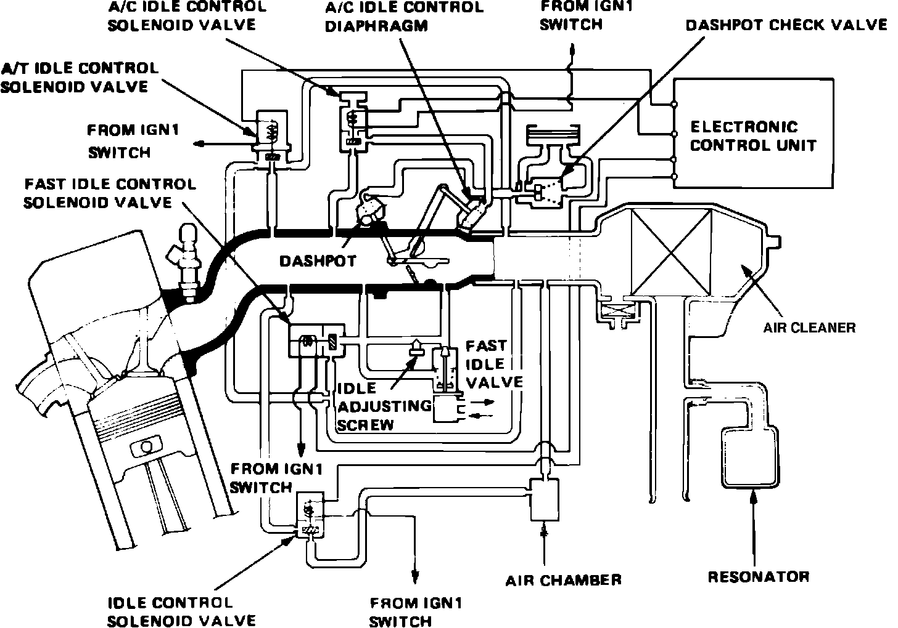
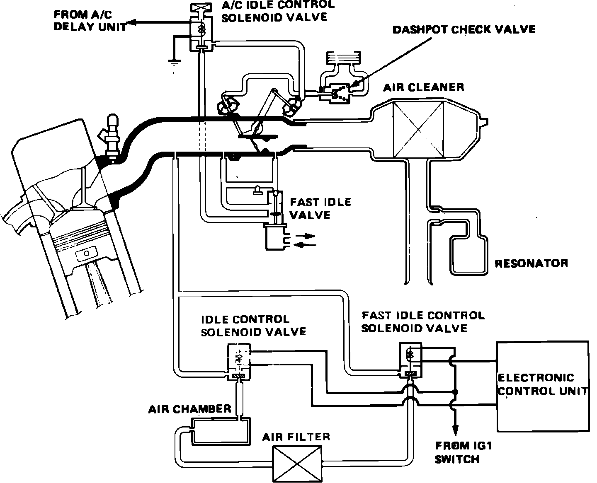
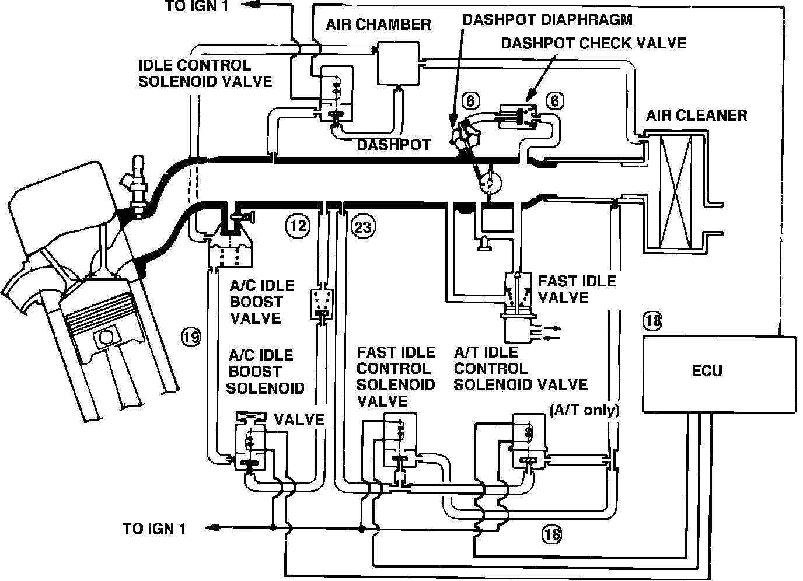
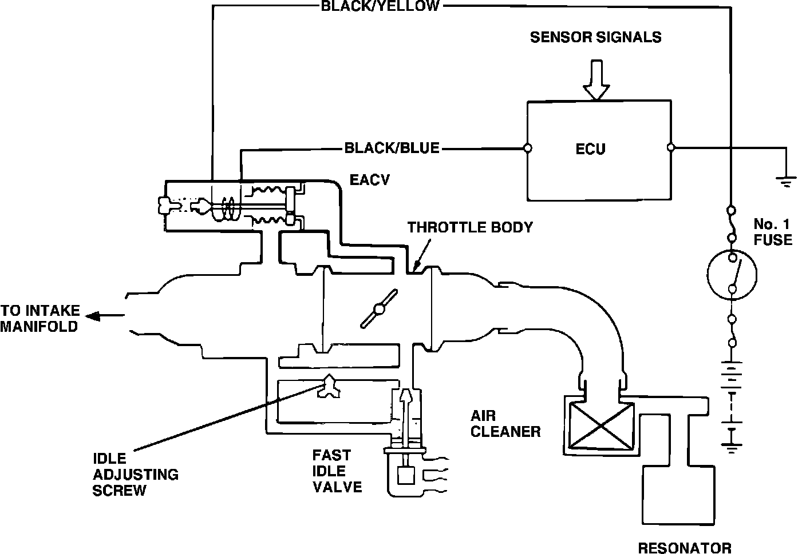

Intake Air System
Fig. 1 Air intake system schematic:

Fig. 2 Air intake system schematic:

Fig. 3 Air intake system schematic:

Fig. 4 Air intake system schematic:

This system consists of the elements that control air flow through the engine including the air cleaner, air intake pipe, throttle body, manifold and the various valves which control curb and fast idle speeds, Figs. 1 through 4.
This system supplies air during engine operation and consists of the air cleaner, air intake pipe, throttle body, an electronic idle control valve (EICV), a fast idle bypass valve and an intake manifold. The EICV and fast idle bypass valve are also part of the Idle Control System.
Throttle Body
The throttle body is either of the single barrel (Integra) or dual barrel (Legend) side draft design. To prevent icing of the throttle valves and air horn walls under certain atmospheric conditions, the lower portion of the throttle body is heated by engine coolant routed from the cylinder head. A throttle angle sensor, attached to the primary throttle valve, senses changes in throttle opening. On manual transmission equipped vehicles, a dashpot is added to slow throttle closure as it approaches the fully closed position (gear shifting or deceleration).
Electronic Idle Control Valve (EICV)/Electronic Idle Control Valve (EACV)
Refer to ``Idle Control System'' for description of this valve.
Fast Idle Bypass Valve
Refer to ``Idle Control System'' for description of this valve.